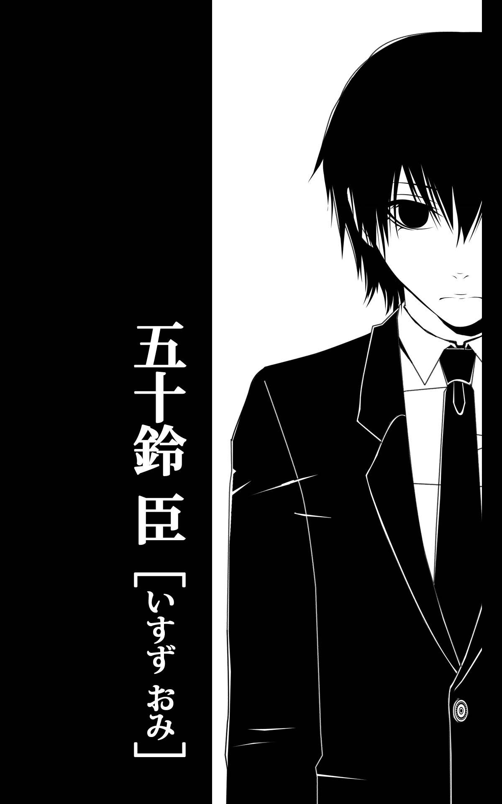
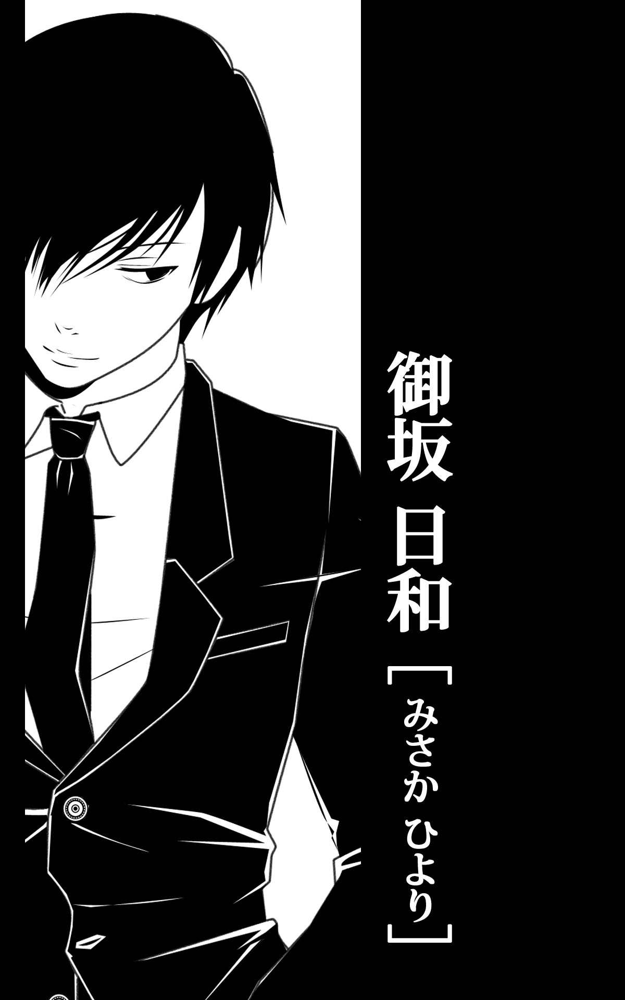
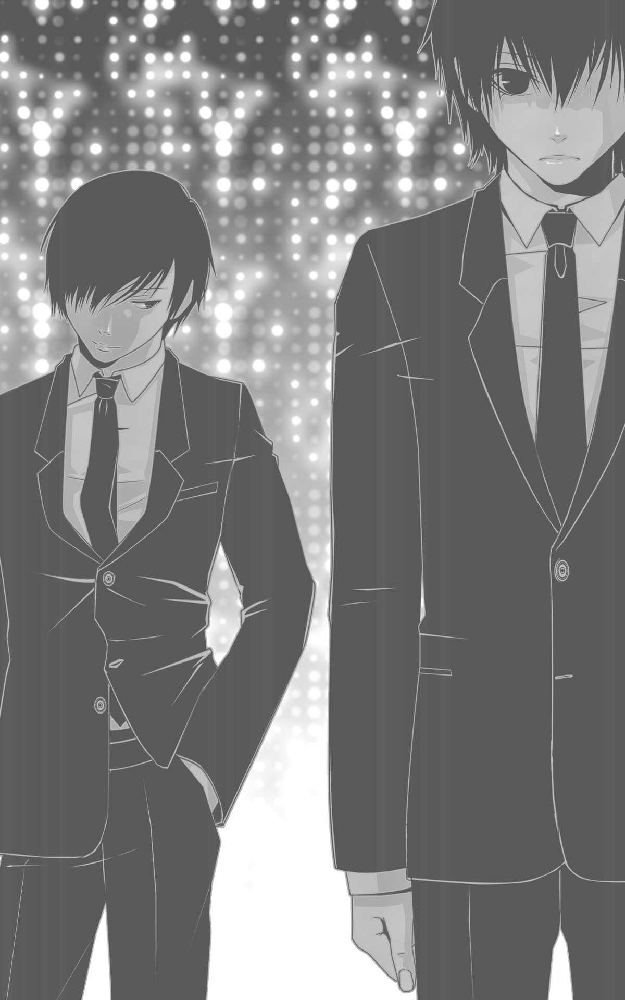

| 24・25 | |
| 兎蜂 | |
| ESCHATOLOGY (2016) | |
兎蜂


いつもは御坂が俺の部屋に来るが、なぜか今日は俺が御坂の部屋に呼ばれた。
随分生活感がない部屋だと思った。
例えば、ホテルの一室のような。
何もかも、新しい匂い。
それに一人暮らしのわりに広い。ファミリータイプの間取り。
唯一フローリングに転がるシガレットケースからこぼれた煙草の葉が、辛うじて生活感を感じさせていた。
部屋を見まわす俺に、御坂は淡々と告げる。
「携帯」
「......ん」
会うとまず、御坂は俺の携帯の履歴とメールをチェックする。
一通り眺めて満足したのか、御坂はベッドヘッドに俺の端末を置いた。
「そういえば飯は？」
「あ、......軽く食ってきたから」
「そ」
本当は昨日の夜に連絡があってから、水しか口にしていない。
とても御坂の部屋で洗浄する気にはなれなかった。
ローションもまだ。
「あの、シャワー、」
「いいよ、そのままで」
「......っでも、ローション、」
「今日は俺が準備してあげる」
「あ......っ、ん、あぁっ、」
「は、」
一週間ぶりに御坂に犯されて、悦んでいる自分に呆れた。
俺の上で汚い俺の穴に突っ込んで、気持ち良さげに荒い息を吐いて、腰を打ち付ける男の端正な顔をそっと見あげる。
高校の頃からのツレで、大学のコンパかなんかのとき、しこたま飲んで泥酔したコイツを近いからという理由で押し付けられて、仕方なく家に泊めたら勢いだかなんだかで無理矢理ヤられた。
以来、なぜかだらだらと身体だけ。
お互い社会人になった今でも、続いている。
俺の視線に気付いたのか、予想外に深くを抉られて仰け反った。
「っひ、......っんあぁ、あぅ、......ッンン、」
「......見てんじゃねぇよ、」
酷い男だ。
俺を犯して、こんな、突っ込まれて悦ぶ身体に作りかえておいて。
お前は俺の全てを見たくせに。
膝を胸につくほど押し付けられて開かされて、腰を持ち上げられた。
嫌でも繋がった部分が目に入る。
「っいや、」
「なぁにが『いや』、だよ。触ってもねーのにチン先ぱくぱくさせやがって。どうせ見るならこっち見ろよ。五十鈴、ほら、」
「あ、......っぁ、」
「このきたねー穴でイけんだろ、お前は」
「っやめ、いやだ、」
情けなさに身体を捩った。
ただの排泄するための穴だったはずのそこに、御坂の器官を突っ込まれて、悦んでいる俺。
俺は、好きでこんな風になったんじゃない。
御坂が、俺をこんな風にしたのに。
「あー、イきそ、」
「っあ、っあぁ、」
両手で腰を掴まれて、好き勝手に突き上げられて、かたく目を閉じる。
俺をこんなにしておいて、御坂は俺を汚いと言って笑った。
無理矢理ヤられて、どうしてこんなことをしたのかと訊けば、御坂は『新見にヤらせたんだろ？だったらいいじゃん、別に。次から生でするから洗浄しとけよ。あ、あとローション仕込んどけ』と、のたまった。
新見とは確かに仲はよかったが、だからといってヤったなどと言いがかりをつけられるとは普通に考えたらあり得ない。
「ふざけんな」、とキレたら逆ギレされて吐くほど蹴られた。
仕方なく命令をきく自分も嫌だ。
抱かれて絆されて、オナホ扱いされても、結局流される俺の負けで。
いつもなら勝手に時間だけ告げて俺ん家に来るのに、今日はなぜか御坂ん家に呼ばれて、それだけで浮かれる自分も心底殺したい。
身体の奥に飛沫を感じて、それに引きずられて絶頂する自分の身体に辟易した。
「っは、」
「っあ、あぁ、......」
脱力した御坂が俺に体重を預けるこの瞬間が、少し好きだ。
抱き締められてるみたいに、勘違いできて、少し幸せになる。
いつもその、俺とは違う広い背に腕をまわしてみたいと思いながら、シーツの波に掴まっているのが精一杯だったけど。
こんなことを考えている自分が、自分ですら気持ち悪いとは、思う。
そんなことをぼんやりと考えていたら俺の汚ねー穴から自分の器官を抜き去って、御坂は俺の上から退いてベッドに転がった。
御坂の精液が溢れてシーツを汚す。
消えた体温と体重。
俺はイッたばかりのだるい身体を起こして、床に落ちている自分の服を拾ってのろのろと身につけた。
「......五十鈴」
「......ん。......すぐ帰るから、」
はじめて抱かれたときもそれ以降も、ヤるのは俺の部屋だったから、俺はいつもゆっくりしていられた。
出すだけ出して、気が済めば御坂は勝手に帰る。
準備も後始末も、ゆっくりできた。
御坂の部屋に呼ばれたのは今日がはじめてで、俺はすぐにでも帰らなければならないのだろうと、慌てた。
「五十鈴、いいって。もっかいするし。んな焦んなくても」
「も、一回、？」
「そ。もう一回。もしくは二回」
俺の腰に腕をまわして、御坂の手がせっかく穿いた俺の下着とボトムを剥ぎ取る。
フローリングの上に落ちて何かの抜け殻のようになっている俺のスーツの上着。
その上着の上に、無情にもボトムが投げられた。
きっと皺だらけだ、帰りにクリーニングに出そう。
帰り道に確か二十四時間やっている店があったはず。
「......立てなくなるから、それは、」
「いーよ、泊まって」
「......いや、動けるようになったら帰る、」
御坂のオフの予定など知らないし御坂は休みなのかもしれないが、俺は明日も出勤だ。
「いーから泊まれよ、五十鈴」
「っあ、待っ、まだ、」
俺も、御坂みたいにこの行為をただの自慰だと認識できたらよかったんだろう。
俺だけが、御坂に愛情を持った。
御坂にとっては他人を使った自慰であるこの行為も、俺にとってはセックスでしかない。
俺が一方的に御坂を受け入れるための、行為。
「大丈夫、やらけぇよ」
「あー、あ、」
愛撫無く突っ込まれることにも慣れて、突っ込まれるだけでもイけるようになった。
俺の身体は今、御坂に突っ込まれるためだけに存在しているようなもんだった。
見るなとか、汚ねぇと言われる度、俺が死にたくなるのを、きっと御坂は知らない。
「五十鈴、寝ろよ」
「......帰るから、」
くたくたの身体をなんとか起こして、既に明かりを落とされた部屋で、自分の服を手探りで探す。
不意に明かりが点いて、御坂に腕を掴まれた。
「おい、無理すんなよ。泊まれって、」
抱き寄せられて、その無神経さに泣きたくなった。
「......優しくすんのやめろよ、俺に。泊まれとか、簡単に言うな」
「......五十鈴、？」
「俺は、お前の友達でもなんでもねーだろが。用が済んだら好きにさせろ。引き留めんじゃねーよ」
このなあなあに呑まれるのだけは、嫌だった。
お前に犯されて悦ぶ俺みたいな変態にだって、プライドくらいはある。
そりゃ優しくされれば嬉しい。
でもちょっと優しくされて愛されてるなんて思い込むような、勘違い野郎になるのだけは、ごめんだ。
唐突に喉を掴まれて、ベッドに縫い付けられて、御坂を見上げた。
「......テメー、なに調子こいてやがる。お前はただの穴だろうが。お前に拒否する権利なんかねーんだよ」
「っあ、......っは、」
体重をかけられてつまる喉に安堵した。
ああ、命令だったのか。
だったら言う通りにするよ。
優しく言われたから普通に俺の身体を気遣って言ってくれたのかと、思った。
苦痛に強張る俺の身体の中に、御坂はまた突っ込んだ。
「......っすげぇ、締まる」
「っ......、あ、」
御坂に突っ込まれたら、俺の器官はもう条件反射のように勃起する。
「はは、勃ってやがる。首絞められてイイのかよ、お前」
「は、......っ、......ッ、」
酸素を求めて喘いだ。
でも、このまま御坂に殺されるなら、本望だとも、思った。
こんな、空っぽの、セックスとは呼べない行為でも、俺は気持ちいい。
気持ちよく感じるように、なってしまった。
こんな状況でも、御坂が悦ぶから、俺はとびそうな意識のなか、なけなしの力を入れて汚い穴を締める。
愛情はある。
だが、御坂を好きなのかと訊かれても「好き」と答えられない。
わからない。
「っは、」
「あ、ッイイ、？御坂、」
ただ、オナホらしく御坂を悦ばせるのは得意だ。
「五十鈴、......っ」
「ッ、......！っにすんだ、」
不意に首を絞めていた手がゆるんで、唇にキスされて思わず暴れた。
いや、キス自体は別にいい。
ただ、今までされたこともなかったから、御坂は俺にキスしないと思い込んでいたせいで余計に動揺してしまった。
「......嫌がってんじゃねーよテメー」
「っあ、ひ、」
深く抉られて悲鳴にも似た声がもれる。
「......五十鈴」
「ッン、ぁ、......っは、」
慣れないキスのせいでうまく息ができない。
「すげぇ、」
「嫌だ、御坂、」
キスはダメだと思った。
御坂みたいな人種と違って、俺はこういう行為を、軽く受け止められない。
「嫌？気持ちよくねーのかよ、五十鈴」
「ッン、あ、気持ち、い、」
だから、嫌なんだ。
首筋にキスされて身体を捩る。
背に鳥肌がたった。
「......イイのか」
「や、っあ、っみさか、」
はじめて与えられる愛撫じみた行為に抵抗する。
「......イイだろ、嫌とか言うな」
熱い唇に乳首を吸われて身体が跳ねた。
「っあぁ、やめ、......っ」
「......！、五十鈴、？」
泣きながら射精する俺を、御坂が信じられないものを見るような目で見下ろす。
慣れない愛撫に身体が過剰に反応してしまった。
「......っいつも、みたいにして、御坂。......キスとか、やめてくれ。俺そういうの、慣れてねーから、」
「......」
バカみたいだ。
暴力のような、酷いセックスに慣れてしまって、ちょっと優しくされたら簡単にイける。
呆然と俺を見下ろす御坂を見上げて、あまり見たらまた見んなとか言われるのだろう、とすぐに目を伏せた。
「......御坂、まだ出してねーだろ。......早く出せよ、」
軽く身体を揺らしたら、抱き締められて面食らう。
「......っごめん、」
謝られたら、惨めになることを、御坂は知っているだろうか。
今さら謝られて、俺はどうしたらいい。
「......もう飽きた？」
「五十鈴、」
「最後だから優しくしたり家に呼んだりしたわけ？」
「違う、」
綺麗な顔を歪ませて、御坂はまた俺にキスした。
「っん、やめろ、......って、」
「五十鈴、なんかくれ」
「？、なんかくれって、なに、」
「......今日俺誕生日だから。......なんかくれ、五十鈴」
「っあ、噛むなって、」
「っ五十鈴、」
抱き締められて乳首を噛まれて、俺はもう精液も出ない射精をした。
首筋を吸われて目眩を耐える。
気紛れな御坂の愛撫にそんな反応を返す自分の身体が鬱陶しい。
うんざりする。
「明日、っ明日なんか、用意するから、」
「今がいい、五十鈴、」
「今って、言われても、」
「今、ここにあるもの、......くれ。......五十鈴」
俺の胸に額を擦らせた御坂の頭をおそるおそる抱いた。
「......今はなんも持ってねーよ、」
「......くれよ、五十鈴、」
俺の肩を吸って、痕を残す御坂の横顔を見つめた。
「......何が欲しいんだ」
「これ、くれよ」
見つめていたら御坂の顔が近付いてきて、窺うように俺の下唇を舐める。
「............汚ねぇんじゃねーの」
「汚ねぇよ。新見になんか抱かれやがって。......汚ねぇ」
「......俺は汚いけど新見は綺麗だよ」
「なに庇っちゃってんの。マジキメェ」
がっかり、した。
がっかりした自分にもがっかりしたし、御坂が新見への当て付けに俺を抱いたことにも。
よくも悪くも、少しくらいは、俺に興味があったから抱いたのだと思っていた。
「......新見は別に、好きで俺と居たわけじゃねーよ」
「へぇ？」
「......新見は絢香が好きなんだよ、お前のカノジョの。だからお前とつるんでた俺と仲良くしてただけ」
「......男とヤっといて女追っかけてんのか、最低だなあいつ」
女がいるくせに俺とこんなことをしている御坂もたいして変わらない。
そう思ったが、口に出すのは止めた。
それに新見は俺とヤってなんかいない。
気が殺がれたのか、御坂は俺の身体を離してジーンズを穿いた。
フローリングに転がっていたシガレットケースを拾って、一本取り出して口の端にくわえる。
同じように銀のライターを拾って、煙草に火を点けた。
俺は身体を起こして、今度こそ帰ろうと皺だらけのスーツを手にとった。
「......泊まれっつってんだろが」
「......誕生日なら彼女と過ごせよ。御坂が欲しいもの用意してるよ、多分」
「新見んとこに行くのかよ」
「......違う。俺、明日出勤だから」
ネクタイは鞄に突っ込んで、上着を羽織る。
「......そんなに新見が好きか。俺とするよりいいのかよ」
思わず溜め息を吐いた。
「......いい加減にしてくれ。新見が気に食わねーかなんかしんねーけど俺を巻き込むな。知るわけねーだろ新見がイイかどうかなんて」
ずっと脚を開かされていたせいで立つと脚が震える。
まともに歩けるかと少し心配になった。
御坂の口から吐き出される煙を眺め、腕時計で時間を確める。
始発を待つかタクシーを使うか、悩むような時間だった。
「五十鈴」
「......な、に」
視界に影が差して、気付けば目の前に御坂が立っていた。
裸の上半身に勝手に目がいく。
「......泊まれ」
「御坂......いい加減に、」
「............新見」
「なにを......」
「......新見はよかったのか」
「......なにを言ってんだよ......わけわかんねーマジ」
また新見。
ここまでしつこいと愛憎紙一重で逆に御坂は新見を好きなんじゃないかと思えてくる。
ルームライトの下、影が指す瞼の奥、狂気すら浮かべて、俺を見下ろす御坂の目が俺を映していた。
肺の中の空気を全て吐き出す勢いで溜め息を吐いた。
「答えろよ、......新見とヤったんじゃねーのか、お前」
「......帰る」
「帰っていいなんて言ってねぇ」
腕を掴まれて鞄を奪われ、思わず叫ぶ。
「御坂......！」
「いい加減にしろよ、五十鈴。蹴られたいか」
ゆっくりと、ベッドサイドのテーブルに置かれている灰皿に煙草を押し付けて、御坂は俺の顎を掴んだ。
無理矢理上を向かされて御坂を睨む。
「......新見がお前みたいに男女かまわず手出すと思ってんのか」
「......ヤってねーのか、って訊いてんだよ、俺は」
太い指が首筋に食い込んで痛む。
「......っするわけねーだろ普通、......っいてぇ、んっ、」
キスされて、潜り込んでくる煙草臭い厚い舌から逃げることもできず、俺は諦めた。
身体から力を抜いたら御坂が思いのほか優しい声で囁く。
優しげな声とは裏腹に、剣呑な目が俺を見下ろしていた。
「......本当だな」
「......どうかしてる」
「誤魔化すな」
「っしてねーよ、......っん、」
舌を吸われながらまたスーツを脱がされて、俺は徹夜することを覚悟した。
白い身体に思う存分手を這わせた。
「......あ、っぁ、」
「五十鈴......」
新見に抱かせた身体だと思ったら触れたくても触れる気にならなかった。
それでも誰かにやる気にはならず、ずるずると続けてきたが。
それも今日で終わる。
四つん這いにさせて、細い身体のラインを手のひらでなぞった。
首筋にキスして痕を残しながら耳に噛み付いただけで、五十鈴は達した。
もう精液も出なかった。
「ッン、......っ、」
「......俺だけ、......？、五十鈴」
そう訊いたら赤い目で俺を睨む。
「お前が無理矢理ヤったんだろうが、......っ、」
「......だって新見が五十鈴食ったって、......金谷が言うから」
サラサラの内腿を手のひらで撫でたら、五十鈴の穴から俺の精液がこぼれ落ちて白い肌に線を描いた。
穴に指を入れたら綺麗な背をしならせて、五十鈴が声をあげる。
「ッア、」
「......好きだ、五十鈴、」
「......っなに、言っ......、あ、」
「ごめん、」
五十鈴の中から自分の精液を掻き出して、はじめて触れる指に絡む粘膜の感触に嘆息した。
他人に抱かせた身体だと思ったら優しくする気にも可愛がる気にもなれなかった。
それでも好きで。
好き過ぎて。
理不尽だとはわかっていながら、他人に抱かせたことがどうしても許せなかった。
不確かな噂だったが、完全に否定できない限り限りなく事実だ。
五十鈴が身体を起こして、俺の方を向く。
もっと五十鈴の中に触れたかったのに。
「......いつ、から？」
「......最初から」
「......大学？」
「............欲しかったのは、高校の頃から」
俺を見上げる五十鈴の目にかかる真っ黒の髪を指先で払った。
俺を映している五十鈴の目を、随分久々に見た気がする。
「......好き、って、」
「好きだ」
「誰を」
「お前」
「......俺が好き、なのか」
「あぁ」
ぼんやりと、全裸のまま、俺を見あげてくる五十鈴がひどく無防備で。
「なんで、......無理矢理、」
「お前急に新見にべったりになったじゃねーか、大学んとき。抱かせたとか、きいて。自分が必死で我慢してきたこととか、バカらしくなった」
「......新見は、確かに仲良いけど。......それは御坂がなんか、俺避けはじめたから俺新見とつるむしかなかったし、」
「......あの噂、何で否定しなかった」
「噂？」
「新見が、五十鈴食ったって、俺金谷にきいた日にすぐお前にききに行ったよな。なのにお前、」
「そんなん信じる方がどうかしてるだろ......。イチイチ否定するのもめんでーよ......」
呆れたように溜め息を吐く五十鈴にキスする。
「......女は仕方ねー、でも五十鈴が新見に抱かせたと思ったら腹がたった、......なんで俺じゃなくて新見なんだよって、」
「ヤってねーし」
「ごめん......五十鈴、五十鈴......、」
「っあ、」
押し倒して赤く膨れた乳首を吸う。
脚を開かせてもう一度五十鈴の中に指を入れた。
「っ柔らかい、」
「ッン、」
柔い肉は乳首を吸う度に俺の指を締め付ける。
「すげぇ、」
「！、いや、」
五十鈴の膝の裏に手を入れて膝を薄い胸に押し付けた。
浮いた五十鈴の腰を自分の腿の上にのせて、さらに高く持ち上げる。
まだ少し開いたままの穴が収縮するのが見えて、思わず唾液を飲み込んだ。
「......ッ、」
「......っ御坂、......っやめろ、頼むから、」
五十鈴が羞恥に涙をこぼす。
暴れる足首を捕まえてキスした。
足の指をしゃぶってやったらびくびくと身体を跳ねさせる。
「......いれたい、五十鈴」
「っやめ、......っ、もう、イけない、っいたい、」
空イキするのはキツいらしい。
「ふざけんな、やっと思いきり抱けんのに」
「っいやだ、みさか、」
ジーンズのフロントをくつろげた。
自分の器官を何度か擦って、五十鈴の穴に押し付ける。
五十鈴は兎みたいに赤くなった目から涙をこぼしながら、懇願するように「やめて」と呟いて薄い唇を震わせた。
俺はその何もかもに、興奮した。
「っあああ、も、無理......っ、むり......っしんじゃう、」
「っは、五十鈴、」
貫いたら五十鈴の器官から少しだけ、もう透明な精液が滴った。
「みさか......っ、ゆるし、」
「駄目だ」
五十鈴にとっては馬鹿らしいと感じるような、否定する気にもならない噂でしかなかったのかもしれないが、俺にとってあれは裏切りだった。
「アホか」と一言で片付けられて、否定すらしない五十鈴に絶望した。
社会人になってからは新見と会ってる気配もなくて、最近やっと、もういいかと思えるようになって今日、家に呼んだのに。
やっとだ、やっと。
五年かかった。
んで新見とヤってねーって解って。
もうブレーキなんかどこにもない。
「っいあぁ、......っやめ、みさかぁ......っ、おねが、」
「ヤる。俺が空イキするまでヤる」
「っも、マジで、......っこわれる、......っ」
「いいよ、もう恥ずかしくて俺以外に見せらんねーような身体になればいい。がばがばにしてやっから」
「っいや、いやだ、」
膨れた赤い乳首を口に含んで吸った。
出るものもないのに五十鈴の性器はガチガチに勃起したままで、穴は拡がって腰をひく度に赤くなった粘膜が見え隠れする。
「......っは、すげぇ、」
「んぅ、......っやだ、もう......っ、」
息が出来ない魚みたいに仰け反ってはくはくと口を開閉させて、「嫌だ」しか言わなくなってしまった五十鈴の口に指を入れた。
「......付き合うよな、五十鈴」
かたく目を閉じて、首を横に振る五十鈴の細い腰を片手で掴んで奥まで突き入れた。
「ひ、......っいぁぁ、......っ、」
「......お前に拒否権はねーよ」
「っやら、ぁ......っ、ぁ」
暴れる腕を掴んで自分の首にまわしたら抱き締められて不覚にも頬がゆるむ。
可愛い。
「はは、どんだけ嫌がっても決定事項だ、諦めろ」
「......んっ、......っ」
口から指を抜いてキスして返事を奪った。
突き上げて奥に射精したら、五十鈴の腕が滑ってシーツに落ちる。
意識を手離した五十鈴の中に全部出してから、力を失った身体を眺めた。
「......誰にも渡したくねぇなぁ......」
俺の女が好きだとかいう苦し紛れの新見の言い逃れに騙されているなら、鈍いにも程があるだろう、と思う。
だがここ一年は五十鈴の着歴にも履歴にも新見の番号はなかった。
脱力した五十鈴を抱えて風呂に向かう。
今日も出勤だとか言っていた気がする。
抱えた軽さに驚いた。
身長は俺とあまり変わらないくせに筋肉量が全く違う。
見てるこっちが不安になるほどガリガリだった。
「ん、」
抱えたままジーンズを脱ごうとしていたら五十鈴が起きたらしい。
「わりぃ、起こしたか。風呂にいれようかと思って、」
「......みさか、？」
「あぁ」
「っん、......」
キスしたら思いがけず五十鈴の舌が追ってきた。
ぼんやりと舌を絡めながら五十鈴を抱えて浴室に入る。
男二人でも十分な広さだった。
当然だ、そのつもりで借りた部屋だ。
シャワーで身体を流してやって抱えたまま湯船に身体を沈めたら、五十鈴は俺の肩に頭をのせたまま、またうとうとと微睡んでいた。
細い身体。
腰だって両手のひらで掴めそうなほどしかない。
湯船から出ている肩に湯をかけてやりながら、湯船から立ち上る湯気をぼんやりと眺めた。
「......御坂、？」
「ん」
「ぁー、......俺寝てた......」
「寝てろ。洗ってやっから」
「かえんなきゃ、スーツ、」
「付き合うよな、五十鈴」
今首を縦に振らないなら、もう今後も「うん」とは言わない気がした。
「......何で？」
「お前も俺好きだろ」
「今まで通りでいーし......どうせ付き合ったってなんも変わンねーだろ」
「変わる。お前と他人のことに口出せる。お前に手出すなって言える」
五十鈴の肩に湯をかけた。
五十鈴の肩を流れ落ちてゆく水の分子。
「......自分だけの玩具にしときたいわけか」
「好きだっつってんだろが」
「ぜってー付き合わねぇ」
「五十鈴......！」
湯の中で五十鈴の身体を抱き締めた。
「別に御坂としかしねーよ。それでいいだろ」
「だったら付き合えばいーじゃねーか」
「......付き合う必要性が見えねーよ」
「付き合ってくれよ、頼むから、」
そう言ったら五十鈴は困ったように眉を下げる。
「だから、......別に俺今のままでいいって」
「......んなに俺が嫌いかよ......、いや最初は無理矢理だったけど......少しは俺好きだから逃げねーんだろ、違うのかよ......」
五十鈴の白い肩にキスをした。
「......わからない」
ぶくぶくと湯船に沈む五十鈴を抱き寄せる。
「......溺れるぞ、バカ」
「へーき」
男二人で風呂で何を遊んでいるんだろう。
随分久々に、こんな穏やかな時間を過ごす気がした。
「......てゆか御坂は女もいんじゃん......」
「......俺五十鈴抱いてからは五十鈴としかしてねーし。絢ならもう大学時代に別れた。新見がマジで絢香を好きなら付き合ってんじゃねーの、とっくに」
「......は」
「まぁ、だからわりと......いつも意識とぶまでヤって悪いとは思うけど。いや自分でも抜いてっけどやっぱ本人だと限界越えるっていうか、」
ぼんやりと五十鈴の髪を弄りながら呟いていたら不意に手のひらで口を塞がれて五十鈴に目を合わせる。
真っ赤な顔に驚いた。
「......っ、」
「どした、五十鈴。......逆上せた？すっげ顔あけーけど」
「っだめだ、付き合わない」
「......ダメか」
「......だめだ、」
「............わかった」
そっと溜め息を吐く。
素直に俺に抱かせてくれるから、五十鈴ももしかしたら俺のことを好きなんじゃねーかとか、甘いことを考えていた。
ただ俺が怖かっただけらしい。
「......御坂、？」
「いや、......さっさあがろ。んで五十鈴はギリギリまで寝てな。明日は車で送るから」
なるべく優しく話しかけた。
キョトンとした表情で俺を見あげる五十鈴の頬を両手で挟んでキスして、シャワーのコックを捻った。
風呂を出て直ぐにうとうとしはじめた五十鈴を腕に抱いて、自分の腕時計で時刻を確認する。
午前四時半。
五十鈴の会社はこの部屋から近い。
五十鈴が俺と付き合ってくれたら、一緒に暮らそうと思って借りた部屋だった。
ここからならあと四時間は眠れるだろう。
「ん、」
身動いだ五十鈴の髪を撫でながら、床の皺だらけの五十鈴のスーツを思い出した。
明日はクリスマスプレゼント代わりに用意したスーツを着て行かせよう。
多分訝しむだろうから、貰いもんだがサイズが合わないという理由で押し付ける。
そのあとこの部屋を引き払って、五十鈴のことはもう自由にしてやろう。
五年。
五年、五十鈴の身体も時間も俺の為に使わせた。
五十鈴がその間に俺を好きになってくれたら、と思っていた。
なんとなく気付いてはいたが、ダメだった。
強姦紛いに抱いたし酷く扱ったと自分でも思う。
それでも五十鈴は俺の電話に出たし、部屋へ行けば言われた通りにローション仕込んで俺に抱かれた。
追い返されたことも逃げられたこともない。
怯えていたのだと言われたらそれまでだが。
最初に手をあげた俺も悪かった。
でもそれからずっと、逃げもせず、俺に言われた通りに電話一本いれたらローションまで仕込んで俺を部屋にあげる五十鈴も異常だったと思う。
五十鈴の白い頬を見つめて、そっと唇を押し付けた。
フラれた。
でもこれで、スッキリもした。
新見とのことはあくまで噂だったとわかったし、好きだと告げた俺に、付き合わないと、五十鈴ははっきり言った。
五十鈴はやっぱり五十鈴だった。
なし崩しで手に入るかもしれないと思っていた自分に苦笑する。
五年。
身体を繋いで、社会人になってからも週末は必ず一緒に過ごして、新見とのことを考えればあまり優しくはできなかったが、それでも俺には精一杯だった。
五年かけて、五十鈴の気持ちは俺に向かなかった。
このままこの関係を続けたところで、この先五十鈴の気持ちが俺に向くことなど奇跡に近い。
入社三年で俺は主任になった。
これからはもっと忙しくなる。
もう、五十鈴を繋ぎ止める時間もなくなるし、貴重だと言われる二十代の時間をこれ以上五十鈴から奪うわけにもいかない。
「......これからも一緒に居たかった、五十鈴」
ベッドヘッドに置いておいた五十鈴の携帯から、自分のアドレスと番号、それから履歴を削除した。
俺の携帯からは消さない。
着信拒否できなくなるから。
まぁ、五十鈴から俺に連絡してくることなどないとは思うが、念のため。
この五年、五十鈴から俺に連絡をくれたことなど、なかった気がする。
いや高校時代から、電話やメール、約束を取り付けるのは俺で、五十鈴に誘われたことなど数えるほどしかなかった。
ぼんやりと記憶を反芻して、死んだように眠る、もう手に入ることもない綺麗な男の顔を眺めながら、止まったように流れる朝までの時間をすごした。
「五十鈴」
「ん」
「今日も出勤だろ、五十鈴」
「ぅん、......ッン、」
ぼんやりと目を開けたら御坂にキスされて焦る。
「朝飯トーストでいいか。一応米も炊いたけど」
「トースト、バターいっぱい塗って」
「ん。顔洗ってこい」
顔を洗ってタオルで拭きながら戻ってきたら「お前髭そらねーんだな」、と御坂が笑った。
「......生えねーんだよ」
「ガキじゃん」
「うっせ」
笑いながら差し出された珈琲を受け取ってぼんやりと飲んだ。
御坂が持ってきてベッドサイドのテーブルに置いた皿にはバターの上にメープルがたっぷり染み込んだトーストがのっていた。
「あ、五十鈴。スーツさ、貰いもんなんだけど俺サイズ合わなくて着てねーのあんだ。それやるから着ていけ。帰ってる時間ねーから」
「......え、いや、貰いもん貰えないし、」
「あっても捨てるだけだし。どうせなら着てくれる奴いたほうがいいだろ、スーツも」
「......わかった、ありがと、」
トーストを齧りながら目を覚まそうと何度も瞬きする。
一日ぶりの食事は甘くて美味しかった。
スーツケースに俺のスーツをしまって、御坂は俺にスーツを着せる。
朝が弱い俺はされるがまま、ぼんやりとしていた。
「ネクタイは俺のしてけ。シャツもやるから。ああ、......やっぱ似合うな」
「いいよ、クリーニングだして返す」
「......やるよ」
誕生日だから何かくれ、と言ったわりに、御坂はやたら俺にくれる。
「あー、御坂」
「ん」
「......おめでとう、誕生日」
「......あぁ、......ありがと」
「何が欲しい？」
「......いや、もう何もいらねーよ、......ありがとな」
髪をかき混ぜられて、なんだか会話も自然で、随分昔、......抱かれる前に戻ったような気がした。
なんだろう、このふわふわした感じ。
「あー、スーツケースも悪い。返すから、」
「いいよ、やる」
「......でも、」
「行くか、車出す」
「うん、......」
車に乗っている間も、胃が浮ついた感じがして、妙に落ち着かなかった。
私服で車を運転する御坂は、初めて会う男のように感じた。
学生時代よりも、男らしくなったと思う。
高校時代に比べたら、背もかなり伸びた。
大学だって成績もよくて、成績だけではなく要領もよくてコミュ力もある。
なんとか就職できた俺と違って、御坂は望まれて会社を選べるほどだった。
そんなことを考えていたら、あっという間に会社についていた。
「じゃあな」
「......わざわざ送ってもらってごめん」
「気にすることじゃねーよ」
「ありがと、マジで助かった」
車を降りて手を振る。
軽く手をあげて、御坂は車を発進させた。
その車が見えなくなるまで見送って、俺は自社のビルに足を向けた。
ただひたすら、疲れていた。
倒れてそのまま寝てしまいたい、という欲望を抑えて煙草をくわえる。
カレンダーで赤く塗り潰されている数字の日が休みとは限らない。
ここひと月フルでオフの日などあっただろうか。
思い出そうとしても、ともすれば顔を出す睡魔が邪魔をする。
眠気を覚まそうと、ベランダに出てライトアップされた街を見下ろしながら、オイルライターの石を擦った。
「もうすぐ誕生日か、日和」
名目上事務所兼自宅の奥の部屋から新見の声がきこえてきて思わず笑う。
「明日、......つか日付変わったし今日だ、ボケ」
「マジで。オメデト」
「どーも」
「クリスマスあたりが誕生日ってバレンタイン製造らしいぜ」
「......デリカシーっつー言葉知ってるか、お前」
くだらない新見の話に苦笑しつつ、白い煙を吐いた。
一区切りついたのか、新見も煙草をくわえつつベランダに出て来て俺の隣に立つ。
シルバーのオイルライターの蓋がカシン、と鳴った。
「日和」
「ん」
「まだ五十鈴が好きなのか」
「............んー、まーなぁ......、......嫌いで手離したわけじゃねーし。とはいってもあれから五年だ。......どっかで幸せになってればいいな、ってレベルだな」
五十鈴を手離して、しばらくは同じ会社に勤めて、新見との接触を機に退社し、新見と二人で会社をたちあげた。
今のところ、目に見えた問題もなくうまくいっている。
「ひでー男だよなぁ、お前。......まぁそういうところも好きだけど」
「はいはい」
俺が五十鈴を解放した途端、新見は俺にアプローチしてきた。
計算高い男だとは思ったが、イコールそれだけ有能な男で、以来そばに置いている。
「日和、」
「ん」
「抱かせて」
「断る」
「俺超尽くしてンのになぁ」
「残念ながらネコじゃねーんだ俺は。つか普通に女が好きだ」
背中から抱きついてくる新見の体温に目を閉じた。
「......そういうところも好きだよ」
「はいはい」
冬の空気に冷えた新見の唇が首筋に触れて身震いする。
あれから、五年経った。
今年で三十になる。
俺は父の子会社をひとまず任され、好きでもない女と結婚する。
「......日和」
「ん」
「......お前まさか計算じゃねーよな」
「......さぁな」
笑って見せたら新見は情けなく眉を下げた。
「......ひでー」
「お前が女なら迷わずお前と結婚するんだがなぁ」
「......そういう風に言うのはずりぃよ、日和」
仕事は楽しい。
父の血を継いでいるのだと、嫌でも自覚した。
「......今の会社、欲しいならやる。......それとも俺についてくるか」
新見は眼鏡をはずし、俺の首筋に顔を埋めて、「ついてくよ」、と呟いた。
新見の前髪が頬を擽る。
「抱かれてやるのは無理だが一生そばに置いてやるよ。別れることもねぇ」
「そこまでわかって、............まぁ、もうそれでもいいや」
言いかけてやめた新見を、少しだけ可愛いと思った。
例えば、絢香ととっくに別れていたこととか。
会社では異例の昇進を遂げていたことだとか。
最後に会ったあの部屋を、俺と暮らすために借りたこととか。
本当はすげー忙しかったのに、週末は必ず俺の部屋に来たこととか。
......俺を、好きだったこととか。
なにもかも、あの日。
五年前のクリスマスイヴに、俺ははじめて、知った。
つまり、俺は御坂のことを何も知らなかった。
『付き合って、五十鈴』
御坂の真意が見えなくて、新見のこともあってどうしても本気だとは思えず、頷けないまま。
あのとき、妙なプライドなんか捨てて素直に「うん」と言えばよかった。
どんな扱いを受けたってどうせ俺は御坂が好きなのに。
ならば頷いて後悔した方がまだよかった。
今思うことは、そればかりだ。
俺はいつも何でも、トロくて。
人一倍トロくて。
求められる身体を御坂に差し出すだけで精一杯で、御坂がそうした意味や、御坂が気持ちいいと呟いたら泣きたくなるのはなぜかとか荒い呼吸のまま名前を呼ばれると嬉しいのはどうしてかとか、考えていなかった。
高校時代は楽だった。
御坂は俺が考える時間を与えずに、何でも決めてくれたしやってくれた。
流されて流されて、気が付いたら御坂は居なかった。
自分で気付かない間に、俺は御坂に依存しきっていたらしい。
一週間経っても連絡がなくて、二週間経って、不安を殺しながら御坂に電話しようと携帯を確認したら御坂の連絡先も履歴もメールも全て削除されていた。
そのときに気付いた。
俺は自分から連絡することなく、常に御坂からの連絡を待つだけでよかった。
御坂が週末は俺の部屋に来るのは当然で、俺はそれを疑わなかった。
それでいいと、思って、いた。
御坂の連絡先がわからないというだけで、俺はもうどうしていいのかわからなくなった。
必死に記憶を辿って先日はじめて招かれた部屋を訪ねたが既に引き払われていた。
引っ越し先もわからないし、御坂の勤務先すら、知らない。
何も、知らなかった。
御坂と連絡がとれなくなって間もなく、新見とも連絡がとれなくなった。
新見なら御坂に詳しいだろうと真っ先に連絡したのに、俺の番号は新見に着信拒否されていた。
かなりの手間と時間をかけて、大学時代の友人からなんとか御坂の就職先をききだして連絡したときには、御坂は既に退社した後だった。
何もかもが遅すぎた。
御坂に押し付けられたスーツとタイ、シャツだけが俺の手元に残った。
御坂が来なくなっても、毎週末、ローションまで仕込んで御坂を待った。
待ちながら、朝まで自慰をした。
諦めることも忘れることもできず、かといって御坂以外と、女とすら付き合う気にはならなかった。
それももうすぐ、終わる。
「......よくここがわかったな」
懐かしい声に、顔をあげた。
御坂のマンションのエントランスで数時間、ぼうっと御坂を待っていた。
御坂の手が、感覚もなくなりはじめた俺の頬を撫でる。
その指を熱いとすら感じた。
「......あぁ、」
呟けば「あがっていくか」と御坂がごく普通に笑う。
御坂は、もう俺に強要しない。
俺は今日、自分から御坂を訪ねてきた。
ここから先は、全て俺の意思。
「......迷惑じゃなければ」
俺はよほど切羽詰まった声をしていたのだろう、御坂は噛むように笑って、エントランス横のパネルの暗証番号を押した。
久々に見る御坂は全く変わっていなかった。
あの日のまま。
いや、少しだけ疲れているようにも見えた。
後について一緒にエレベータに乗る。
「いつから待ってたんだ」
「......今日は定時あがりですぐに。昨日までは休みだったからずっと」
「そ。お疲れ」
「......あぁ。御坂も、お疲れ」
「そこらに店あったろ。はいってりゃよかったのに」
「......思い付かなかった」
「相変わらずだなぁ」、と笑う御坂の横顔をひたすら見つめていた。
御坂、と呼ぼうとした矢先、エレベータが到着して名前の代わりに息を吐く。
御坂の後に続いて歩いた。
御坂の部屋は七階の角部屋だった。
随分いいところだと思う。
「......一人暮らし？」
「あぁ。一人暮らしじゃなきゃあがっていくかなんてきかねーよ」
それもそうだ。
二重のロックをカードで認証して、御坂は部屋のドアを開け、俺を見た。
「どうぞ」
「......お邪魔します」
促されるまま、玄関に足を踏み入れる。
リビングに通されて、つめていた息を吐いた。
既に部屋は暖まっていて、長時間冷えた身体が溶けるように力が抜ける。
「適当に座って。コートとマフラー貸せ。なにか淹れよう。珈琲？紅茶？」
「あ、......じゃあ紅茶で、」
コートを脱いだら御坂が微かに笑って目を伏せた。
下はあの日に押し付けられたスーツ。御坂は覚えていないかもしれないが。
コートを受け取ってクローゼットにしまって、珈琲メーカーをセットし、電気ケトルのスイッチをオンにしてから、御坂は隣の部屋に引っ込んだ。
おそらく寝室なのだろう。
一人掛けのソファに腰をおろし、ぼうっと部屋を眺めた。
やがて御坂が戻ってきて、珈琲と、俺の分の紅茶を用意して、俺が座るソファの目の前のローテーブルに置く。
着替えたのか、ラフなジーンズにニット。
とても今年三十には見えない。
「お前も着替えるか」
「いや、大丈夫」
向かいのソファに座って、御坂は背もたれに体重を預けて目を閉じた。
「疲れてんね......」
「......まぁな」
久々にきく、御坂の低い声に耳を澄ませ、ティーカップを手にとって口に運んだ。
ダージリンの香り。
「......おいし」
「そりゃよかった。あー、悪い。......テレビくらいおいときゃよかったな」
「......いいよ、別に、」
「ああいう強制的な媒体は苦手なんだ。バカじゃねーんだから知りたい情報くらい自分で調べる。ネットの方が多角的かつ客観的な情報を得られていい」
御坂らしい。
中途半端が嫌いな完璧主義者。
「......結婚はしてねーの」
「見てわかるだろ......してるように見えるか？」
「見えねーけど一応訊いただけ」
「まぁ来年あたりすんじゃねーかな、多分」
「......相手、いるのか」
「親父が用意した相手と結婚することはもう決まってる。そのかわり三十まで好きにやらせて貰ったしな」
覚悟はしていたがショックだった。
「......おめでとう」
「気がはえーよ、バカ」
珈琲を飲みながら笑う御坂の端正な顔を見つめる。
あの日よりも、少し髪が長い。
それから、やはり好きだと思った。
「どうした、五十鈴」
御坂の声にハッとして、ティーカップをソーサーに戻す。
五年ぶりに御坂が俺の名前を呼ぶのに泣きそうになった。
「......いや、変わらねーなと思って、」
「そうか？おっさんだぞ、もう」
「そう言われたら俺もおっさんなんだけど......」
「はは、五十鈴は相変わらず綺麗だよ」
軽くそんなことを言える御坂を憎いと思った。
それに内心喜んでいる自分にもうんざりして唇を噛む。
「......御坂」
「ん」
もう、俺のことは好きじゃねーのか、なんて。
訊いても仕方がない。
もう遅い。
違う、今日は御坂に呼ばれたわけでもなく、自分の意思で来たんだから。
ソファに掛けたまま、額が膝につくくらい、思いきり頭を下げた。
「......好き、......です」
「......なんの冗談？」
静かな御坂の声。
「もう遅いのも都合がいいのもわかってる、無理でもいいから、......返事の前に、......一度、だけ、」
「............勃つかどうかわかんねーよ」
しばらくの沈黙のあと、呆れたように御坂が溜め息を吐いて、俺は顔をあげた。
立ち上がってスーツの上着の釦をはずし、ソファに沈むように背を預けている御坂の足もとに膝をつく。
御坂の腕がのびてきて、手のひらが俺の頬を撫でた。
「御坂......」
温かい手のひらに擦り寄って唇を押し付ける。
上着を脱いでタイを抜き、フローリングの上に落とした。
御坂のジーンズに手をかけ、ベルトを抜く。
フロントボタンをはずしたところで御坂の手が俺の手首を掴んで止めた。
「おい、五十鈴」
「......勃たなかったら帰るから、」
俺の手首を掴んでいる御坂の手の甲にキスして、俺は手を進めた。
ジーンズの前をくつろげて、下着の上から御坂の器官に触れる。
少し手のひらで擦ったら形がわかる程度に膨らんだ。
そこに下着の上から舌を這わせた。
「......マジで疲れてんだね、すぐ勃った」
「......あぁ、」
唇で食んで、何度も下から上へ、上から下へ往復する。
かたくなってきて、ゆっくり下着をずらし、赤く充血した先端を口に含んだ。
「......すげ、こんな、なってる、」
充血した器官の鈴口を舌先で割って先走りを味わう。
御坂が微かに呻いた。
「......っ五十鈴、」
御坂に奉仕するなんて初めてのことだ。
俺はずっと、されるがままだった。
「気持ちいい？御坂、」
「いいよ、」
舌先で裏筋を往復しながら、自分のボトムと下着を脱ぐ。
「御坂......」
「......っは、やべぇ、」
深くくわえて、喉で味わった。
苦しかったけどそんなことよりも御坂を喜ばせたかった。
しゃぶっていたら我慢できなくなってきて、勝手に腰が浮く。
自分の穴に指を入れたらローションが滴った。
「......っ、御坂、みさか、......挿れたい、......っ、」
唾液に塗れた御坂の器官に頬擦りして、ねだる。
「......欲しいのか」
「ほしい、みさか、......っ、」
「......まだダメだ」
「......ッ、あ、」
仕方なくもう一度くわえようとしたら、代わりに御坂の太い指を口に入れられて、泣きながら舌を絡めた。
「立て」
「......っ、」
指から口を離し、震える足で立ち上がる。
勃起した俺の器官が、間抜けにシャツを持ち上げていた。
御坂は腿を隠すシャツをそのままに、俺の膝の内側に手のひらで触れた。
「恥ずかしいね、五十鈴」
「......ん、」
頷いて見せたら御坂が微かに笑む。
そのままゆっくりとその手を滑らせて、御坂は俺の内腿を撫であげた。
「......俺に触られて嬉しい？」
「うれしい、」
やがて御坂の手が脚の付け根に触れて、脚の間を指で辿ってゆく。
滴ったローションに触れて、手を止めた。
「......仕込んできたのか」
「......っ、っうん、」
ぐ、と指を挿れられて思わず声がもれる。
「柔らけぇ、」
「っあぁ、」
中で指を曲げられて膝が落ちた。
腕を掴まれて抱き寄せられて、御坂の身体に凭れる。
「......なんでこんなやらけーの、五十鈴、」
「......っ、」
羞恥に唇を噛んでいたら、御坂の膝の上にのせられた。
久々に間近で見る御坂に、我慢できずに口付けた。
「ん、」
「み、さか、」
舌を絡めながら御坂の膝をまたいで、ニットの上から手のひらを這わせて身体のラインを確かめる。
「......五十鈴」
「............っ自分で、した、寂しか......っ、た」
御坂の両手が俺の腰を掴んで引き寄せた。
熱い器官が穴に触れて、無意識に息があがる。
それから御坂の無骨で太い指が俺のシャツの釦をはずして、俺の乳首を挟んだ。
「自分で？......なにを挿れた？」
「指......っ、あ、」
「指で足りた？五十鈴は奥で出されるのが好きだったよな」
「足りな......っ、いれて、奥に、」
なかなか挿入しようとせずに、遊ぶように入り口を押したり擦ったりする熱の塊に上ずった声で懇願する。
「欲しいなら自分で出来るだろ、？」
「する、っするから、見てて、」
「あぁ」
「みさか......っあ、」
「そのまま。ゆっくり」
御坂に見えるように脚を開いて、少しずつ腰を沈めた。
「っは、あ......っ、くるし、」
「もう少しだ」
こんなに奥まで犯されるのは久々すぎて内臓を潰されるような圧迫感に歯を食いしばった。
五年ぶりに受け入れた御坂のそれ。
「っあ、......っあ、」
「......はいった。頑張ったな、五十鈴」
苦しいのに、俺の器官はだらしなく白濁を滴らせている。
「っきす、」
浅く息をして、キスをねだった。
少し笑ってから、御坂が俺の舌を吸う。
恥ずかしいし、情けないし、プライドもなにもあったもんじゃねーと思う。
でも、御坂が好きだ。
ゆるく舌を絡めながら、腰を動かした。
濡れた音が脚の間から響く。
「女みてぇだな、五十鈴」
「っいい、ぁ、」
「いいのか」
「きもちい......ッ、ぁ、みさか、」
御坂の指先が俺の頬を撫でた。
その指をくわえてしゃぶりながら、腰を動かす。
「......っは、五十鈴、」
「ッン、んぅ、......っん、」
好きだ、好き。
俺にはもう若さもお前の愛も無いけど。
俺の愛だけはあるから。
今日だけでも、別にいい。
五年あっても、俺は御坂を忘れられなかった。
三年目に、忘れることを諦めた。
それからはもう開き直って、御坂を思い出しながら自慰をした。
一週間前、ようやく御坂のマンションを突き止めて、やっとこの化石のような恋を終わらせることができると思った。
それから一週間、待ち続けても御坂は帰ってこなくて、やっと、今日。
「は、すげぇ、」
「御坂、......っ、イイ？」
「いいよ、五十鈴」
今だけでいい、ちゃんと、したい。
自分から求めて、キスも、奉仕も、したい。
「っ、」
「っん、ッン、」
笑って、御坂は厚い手のひらで俺の腰を掴んだ。
乳輪ごと乳首を噛まれて御坂の頭を腕に抱き込む。
「ひ、......っああ、」
下から突き上げられて、自分の意思とは関係なく逃げる腰を御坂の手が押さえつけた。
噛まれたままの乳首が痛い。
でも突き上げられる身体の中が気持ちいい。
「......ッ、イく、」
「ッン、」
身体の奥に叩きつけられた飛沫にしあわせを感じた俺はもうダメだと思った。
御坂の唇を吸う。
御坂の唾液を飲み込んで、御坂の上から退いて、まだ震える足を床についた。
しあわせだった。
化石のような恋は終わった。
残ったのは愛だけだ。
噛まれた左の乳首が赤く腫れているのを眺めながらシャツの釦を止めて、フローリングに落ちている自分の下着とボトムを手にとる。
「......五十鈴」
「ん」
「俺が好きか」
頷けば、御坂は俺の髪を指で梳でながら笑った。
「............酷いよ、御坂。......全部、計算してたんだろ」
「はは」
俺の世話を焼いて俺から思考能力を奪って。
新見に妬くフリをして俺を犯して。
身体まで全部、依存させて。
いきなり放り出して、俺に事実を突き付けて考えさせて、全て認めさせたうえで、俺に選ばせた。
「......御坂、結婚してもいいから、たまに、こうして会いたい」
「......お前はトロいんだよ、五十鈴。まぁそういうとこも可愛いけどな」
「......新見がお前を好きなことも知ってたンだろ、最初から。......それを俺がお前に言えないことも」
少し睨みながら御坂の手に擦り寄ったら鮮やかに笑った。
手首をひかれて御坂の腕の中に倒れ込む。
温かい身体に体重を預けた。
「まぁそれでも身体の相性が悪ければそこまでだった。お前が途中で俺の考えに気付けばそれまでだし、お前が俺を忘れたら終わりだった」
「......」
「それでもお前はここに来たんだろ、五十鈴。俺のとこに」
「......そうだよ。俺はバカだから。途中で気付けなかった自分に嫌気が差す」
「バカならバカなりに五年前イエスと言えば今よりはマシだったろう」
甘えるように御坂の首筋に擦り寄った。
「......仕方ない。五年という時間でも忘れられなかった」
「......そうか。俺がお前に使った五年も意味があったな」
はじめて抱かれてから、十年。
はじめて、自分の意思で動いて、やっと。
この腕の中に来た。
「......結婚しても、会って欲しい。......俺あの部屋借りたんだ、五年前の。もう俺おっさんだからさ、我が儘言わねーし、何番目でもいい。勿論邪魔もしない。気が向いたら来て。電話くれれば、......待ってるから、」
断られてもいい、ただ五年前のように後悔だけはしないように。
「......五十鈴がおっさんなら俺もおっさんだが」
「御坂はずっと王子だろ」
「それは高校時代だ」
「あの頃から変わってねーよ」
通った鼻筋。
奥二重で切れ上がった目もと。
意志の強そうな顔立ちなのに物腰は柔らかで人当たりもいい。
一見相手のペースで話を進ませておいてそれ自体が御坂のペース。
「......俺はお前を全てに出来ない。お前を全てにしてやれる時間はもう無くなった」
「ん」
「お前が俺を忘れて幸せにやってりゃいいなと、思ってた」
「......御坂、無理なら無理って言ってくれていい。俺は今日だけでマジで、十分だし」
御坂の身体を一度ぎゅうと抱き締めてから、離す。
そしてソファの隣に座った。
「......無理、じゃない。が、俺は絶対にお前を幸せには出来ない。そうわかっていて、俺にお前を付き合わせるのはどうかと、......今は思う。......五年前は自分がこう考えるとは思ってなかった。俺も若かったな」
「......俺は一年に一回でも、こうやって会ってくれるならそれで幸せ。五年、......会えなかった。一年なんてなんてことねーよ。それに俺は女じゃねぇ、......自分で稼いで、自分で暮らせる」
御坂が消えた五年に比べたら。
声をきけるだけでもマシだと思う。
「......俺は、お前とは違う。お前は俺が結婚してもいいのかもしんねーが俺はお前に二番三番がいるのは許さねーし結婚もさせない。......それでもいいか」
迷うことなど、何一つない。
「いいよ」
即答したら御坂はまさにお手上げといった感じで天井を仰いだ。
「......わかった」、と呟いた御坂にキスして、ソファから立ち上がる。
足もとに落ちているスーツを手に取ったら御坂に止められた。
「待て。......なにしてる」
「え、......長居するのもあれだから帰ろうかと......、あ、はい、これ」
自分家のスペアキーを上着の内ポケットから取り出して差し出す。
「......」
「......来る前は電話しろよ、色々準備すんだから、」
重い雰囲気を避けようと、軽い口調で告げたら唐突に抱き締められて面食らった。
「......み、御坂、？」
「......明日は休め」
そのまま抱えられて寝室に連れていかれて、丁寧に一枚一枚脱がされて、裸にされた。
御坂の指先や、手の甲が身体に触れるだけで、心臓の音がどくどくと鼓膜に響く。
ベッドに転がされて脚を開かされて、御坂はすぐに俺の穴に指を挿れた。
早急過ぎて身体がついていかない。
ただでさえ、誰かとするのは五年ぶりなのに。
「......っみさか、っぁ、待......っ」
「お前がここに来るまで、俺も五年待った」
「......ッ、」
「......俺が高校時代から何年待ったと思ってる。一回で済むわけねーだろうが」
乱暴に突き入れられて、声をあげた。
「ひっぁ、あぁ、」
「もっと声きかせろ」
「......っあ、ぁ、みさか、......っ」
「五十鈴、」
御坂の首に腕をのばし、抱き締めて口付けたら御坂が笑う。
「......積極的だな」
「......っ、も、後悔すんのやだし、......っあ、」
奥まで突き入れて、御坂は俺の肩に唇を押し付けた。
「......後悔したのか」
「もっと甘えとけばよかったとかキスしたかったとか、あのとき『はい』って言えばよかったとか」
「はは」
「御坂は後悔したことねーの」
「んー、」と考える素振りで俺の首筋を吸う御坂の身体に手を這わせる。
柔らかなニットが俺の手のひらを押し返した。
その感触を確かめながら、裸になってくれないかな、と俺は思った。
「あー、高校時代にお前にナツを紹介したのはちょっと後悔してる、っつか思惑と違った。付き合うとか思ってなかったからな。お前の好みとちげーし断ると思ってたし。......俺はお前に女経験させるつもりもなかったからな」
「......お前......せめて『俺も五年前後悔した』とか気の利いたこと言えよ......」
「俺は基本的に後悔するような生き方してねーし。自分のこと理解して自分の意志で考えて生きてりゃ後悔することなんてあんまねーと思うが。俺は明日死んでも別にいい」
俺がもう戻ってこなくてもいいと思ってたのか。
確かにさっきそう言ってた気がする。
少し寂しいとは思ったが、そういう風に言える御坂を羨ましいとも、やっぱり好きだとも思った。
「......俺は、なんも考えてなかったから。死ぬほど後悔したよ、五年前。もう会えないかもしれないとか、思ったし」
「可愛いこったな」
「......それと」
「ん」
なにもかも御坂の思惑通りな自分が、少し嫌いで、少し好き。
「......やっぱなんでもない」
「んだよ、言いかけてやめんな」
「っあ、......っや、みさか......っあ、」
「言えよ」
唐突に突き上げられて身体が跳ねた。
「っん、いやだ、」
「言うまでイかせねーからな」
俺の器官の根元を御坂の手が握り込む。
「っあ、あぁあ、」
「ドライでイけるようにしてやろうな、五十鈴」
乳首を噛まれて達した。
「......ッッ、あ、」
「キッツ、」
奥に、注がれたのを感じて身体の奥が痺れた感覚に嘆息する。
眉を寄せて熱い息を吐いた御坂を見あげた。
「......っ、おれ、みさかとしかしたことない」
「......は」
「ナツとは、してない。付き合ったけど、お前の言うとおり、..................好みじゃなかった」
「......はは」
この歳で童貞とか。
他の人間に知られたら死ぬしかない。
「笑うな......」
「最高の情報だ、有難う五十鈴。俺の唯一の汚点だと思ってた読み違いが消えた」
「俺にとっては最低だ。なにしろ今後も童貞確定だからな......」
「お前には俺だけいればいいんだよ、五十鈴」
それは十年前、御坂が俺を犯しながら何度も繰り返した言葉で。
微かに笑う御坂は、あの日と同じ顔をしていた。
俺はあのとき、御坂を狂ってると思っていた。
「......俺には、御坂だけで。......いいよ」
狂ったのは俺かもしれない。
でももう、それでいいと思った。
終
この度は「24 ・25 」を手にとっていただき誠に有難う御座います。
こちらはニ〇一三のクリスマスに書いた読み切りを電書化したものです。
病んでるような、でもその関係で安定しているような、そんなお話を書きたかったのです。（衝動）
次ページに番外編を置いておきます。
ここまで読んでいただき、本当に有難うございます。（ペコリペコリ。
それでは、いずれまた。
兎蜂
番外・06 ・24 ＼五十鈴
何もかも知っていて、全てを受容出来るのなら、それでいいと思った。
「五十鈴」
「ん」
「明日は無理だ」
ソファの隣で思案しつつタブレットを操作する御坂のその無機質な横顔に目を向けた。
わかりきったことを確認するように宣言されるのは、意外と息苦しいものなのだと他人事のように思った。
「解ってるよ。明日っていうか、......当分は無理だろ」
「ああ」
「......御坂」
「......」
無表情に操作していたタブレットからおれに視線を移した御坂と眼鏡越しに目が合って、俺は御坂の肩に頭を乗せて甘えるふりをする。
「......六月は祝日がなくて嫌になるな」
本当はもっと、別のことを言いたかった。
「俺はここ三ヶ月オフがなかったんだが」
「好きでやってんだろ、仕事人間」
「まぁな」
今俺の目の前で目を伏せて笑った男は明日から家庭を持ち、事実上、他の女のものになる。
六月の花嫁は幸せになるんだろう。
わかった上で関係を持ってきたが、それでも言葉では言い表せない喪失感が喉までせりあがってきて、俺は御坂のシャツに額を擦らせながら唾液を飲み下した。
「......幸せにな。明日は行けなくて悪い」
そう言うのがやっとだった。
友人の一人として、祝ってやりたかった。
それがたとえ契約のような結婚だとしても。
だがどうしても、式に出て、自分が冷静でいられる自信がなかった。
夫婦として女の隣に立つ御坂の姿を見てしまったら、終わりだと思った。
「......五十鈴」
「ん」
「いいのか、俺が女と幸せになって、お前のこと忘れて」
意地の悪い質問に唇を噛む。
「......御坂が、幸せならいい」
「......」
「俺はただ、......お前が結婚しても、お前に子供ができても、変わらずこの部屋で......待ってるだけだ」
「五十鈴」
「俺はお前しか知らない」
「......知ってる」
「この先もそれでいいと思ってっし。俺はとっくに、一方的にお前と結婚してるようなもんだ。お前に忘れられたら、......俺は未亡人になるだけだ」
「はは、......すげー殺し文句だな、五十鈴」
笑いながら俺の肩を抱いて、御坂は眼鏡をはずしてタブレットに載せ、それをローテーブルに置いた。
口付けられて目を閉じる。
俺の回答はどうやら御坂のお気に召したらしい。
普通なら異常ともとれる俺の言葉を、殺し文句と思える御坂も随分狂っている。
「......好きだ、五十鈴」
「ん」
御坂の柔らかい唇を舐めて、傷など残さないように気を付けながら、明日には他の女のものになる男の背中をかき抱いた。
何もかも知っていて、全てを受容出来るのなら、それでいいと思った。
俺は、それでいいと思ったんだ。
ソファの上、御坂の体重を愛しみながら、自己満足な免罪符を得るために、明日御坂と結婚する相手の幸せを祈った。
24 ・25
著者：兎蜂
発行年月日：ニ〇一六・一ニ・ニ四
発行元：ESCHATOLOGY
誤字脱字等のご連絡はコチラへメールいただけると幸いです。（ぺこり
logyroid@gmail.com
本作品の全部または一部を無断で転載、複製、改竄、改変、翻訳、翻案、インターネット上に掲載すること、および有償無償に関わらず本データを第三者に譲渡することは法律により禁じられています。
